Why

I built a trailer hitch from scrap for a mountain biking trip. $50 budget, tight timeline, marketplace donor hitch cut and rewelded to fit. It worked, but on rough terrain the bike rack would swing backwards on every big bump.
I wanted to figure out why, and whether I could fix it without overbuilding. So I set a simple target: reduce the angular deflection enough that the rack stays stable under a 4G bump, with at least a 2.0 FoS at the critical weld.
Approach
V1 Prototype
Market options cost around $500 and reduced departure angle. I salvaged a free donor hitch from marketplace, cut it down, and rewelded it to fit with the tow bar that came with the vehicle.
{kind=link}
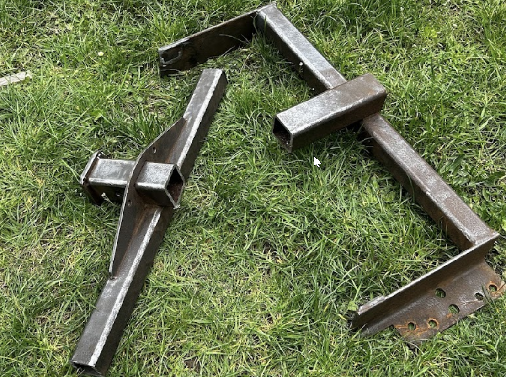
{kind=link}
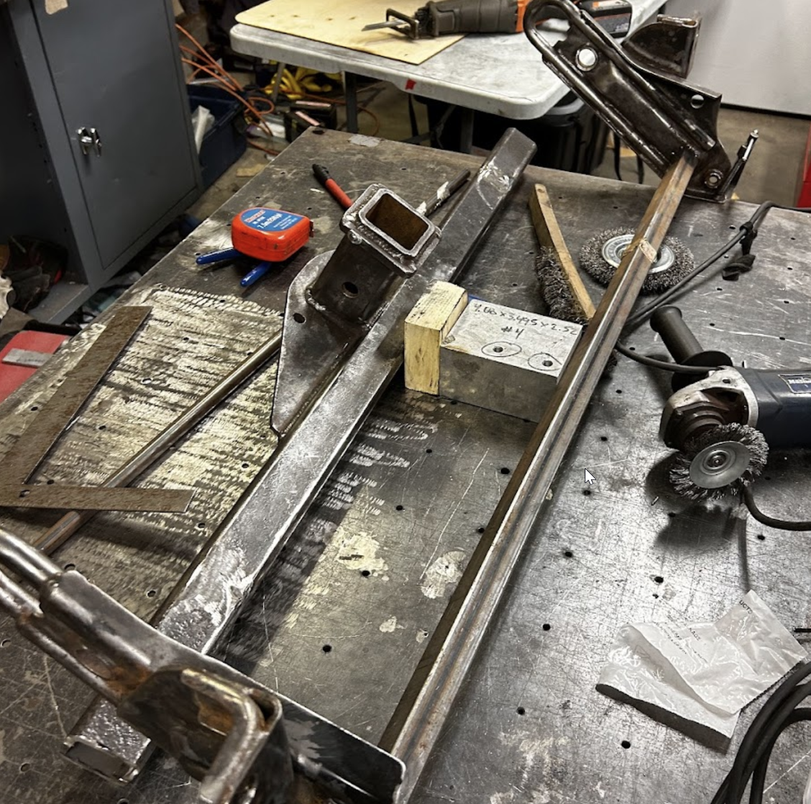
It lasted the 4-day trip, but there was visible angular deflection on rougher terrain. The bike rack would swing backwards going over bumps, especially cross-ditches. It didn't fail, but the movement was concerning enough to investigate.
{kind=link}
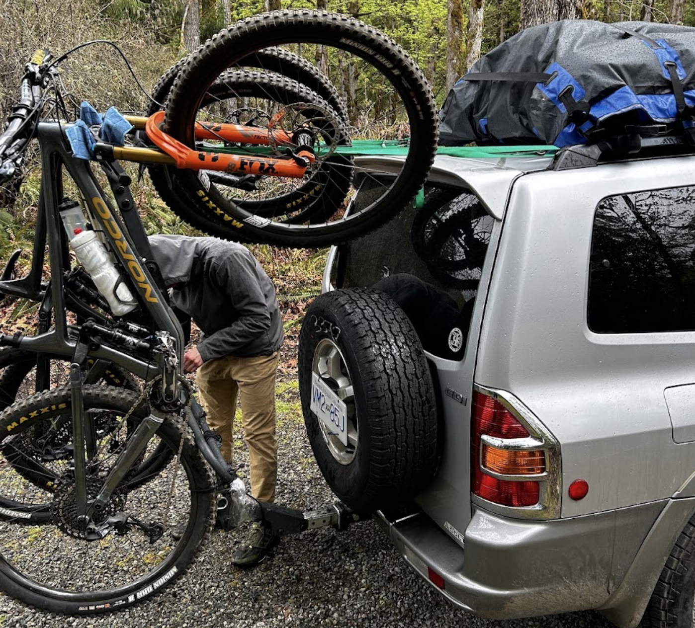
{kind=link}
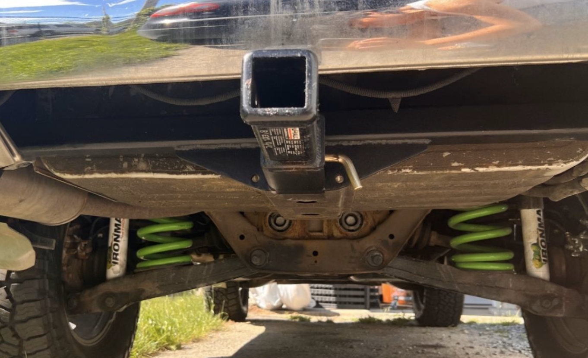
First-Principles Modeling
The first question was which component was actually causing the deflection. I isolated the receiver and crossbar assembly, treating the side plates as rigid fixed supports.
The justification: the side plates are vertically oriented with a high area moment of inertia relative to the load, and there are two of them sharing the load. In a series mechanical system, deflection concentrates in the most compliant component. The crossbar is the softest spring in the chain.
{kind=link}
I modeled the receiver tube as a cantilever beam and the crossbar as a non-circular shaft in torsion using Bredt's thin-wall formula. The MATLAB script is parametric so I could change any dimension and immediately see the effect on deflection.
The analysis confirmed what I suspected: torsion in the crossbar accounted for 94% of the vertical deflection at the tip. Bending in the receiver was almost irrelevant.
| Parameter | V1 Value | Notes |
|---|---|---|
| Crossbar section | 2.0" x 2.0" x 0.25" wall | Original salvaged tube |
| Static tip deflection | 0.0175" | 180 lb load at COG |
| Tip angle (twist + bend) | 0.21° | Torsion dominant |
| Deflection from twist | 0.0164" | 94% of total |
| Deflection from bending | 0.0011" | 6% of total |
Governing Equation
To find the most efficient stiffness increase, I looked at the angle of twist equation. Torque, length, and material are all constrained. The only lever is the polar moment of inertia, J.
Using Bredt's formula for J of a thin-walled closed section: wall thickness t has a linear relationship with stiffness, but midline area Am is squared. Upsizing from 2.0" to 2.5" square tube gave a 52.6% theoretical stiffness gain without needing custom materials or complicated fabrication.
V2 Solution
Before committing to the crossbar upsize, I checked the weld at the receiver-to-crossbar joint. This is where failure would happen first.
{kind=link}
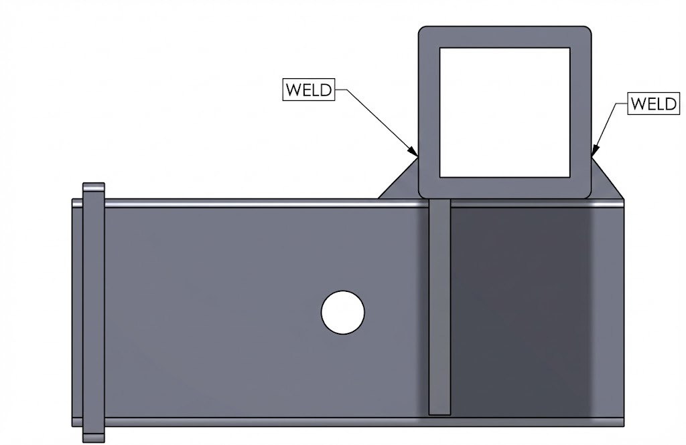
I used Norton's "weld as a line" method. It combines direct shear and torque into a force-per-unit-length on the weld, then converts to throat stress. Material: standard E70 electrode, 70,000 psi tensile. Per AWS D1.1, allowable shear is 30% of tensile, roughly 21,000 psi.
{kind=link}
{kind=link}
The V1 weld showed a 0.95 FoS under 4G loading. Theoretical failure. The upsized crossbar alone wouldn't fix this; the joint needed reinforcement.
Reinforcement Selection
I evaluated several reinforcement options using a weighted matrix against cost, ease of fabrication, stiffness gain, and space constraints.
| Option | Description | Pros | Cons |
|---|---|---|---|
| A. Angle iron gusset | Standard angle welded at joint | Cheap, simple, available | Stress concentration at corner |
| B. Triangle gusset | Plate gusset welded at 45° | Better load path | More fabrication, tight space |
| C. Full box plating | Plates on all faces | Maximum stiffness | Heavy, expensive, overkill |
| D. Tube sleeve | Larger tube sleeved over joint | Clean look | Fitment issues, availability |
Angle iron gusset won. Available off the shelf, easy to cut and weld, gets the FoS above 2.0 with minimal cost.
{kind=link}
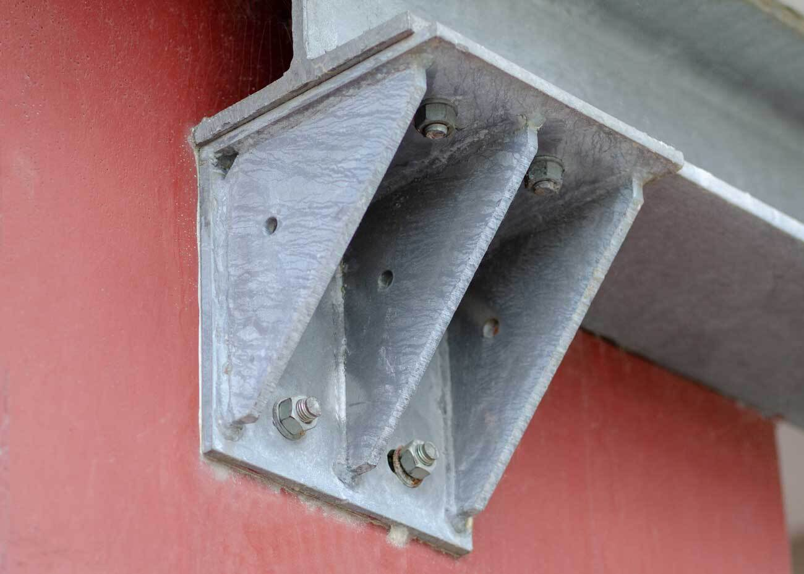
{kind=link}
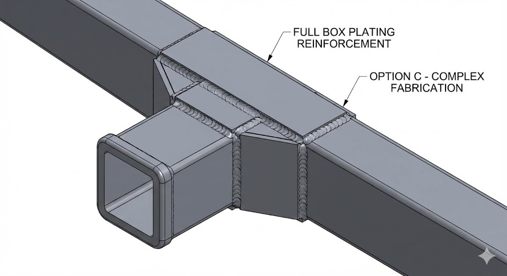
{kind=link}
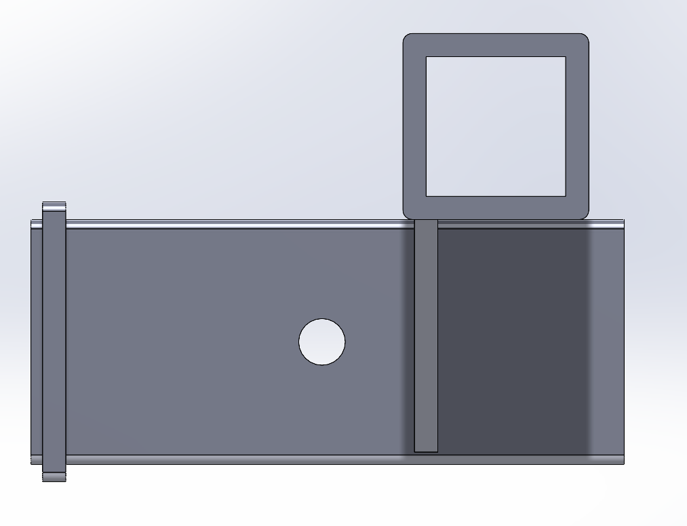
{kind=link}
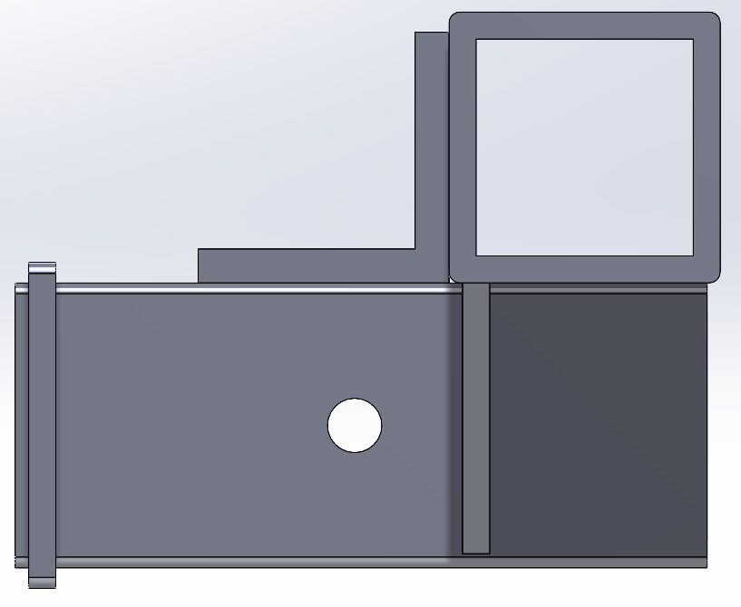
FEA Validation
I ran FEA on both V1 and V2 to check the MATLAB predictions and validate the full assembly under 4G loading. Boundary conditions: fixed both ends of the crossbar, remote load applied at the previously derived COG location. Standard curvature-based mesh with element refinement at corners and features.
V1 vs V2 Deflection
{kind=link}
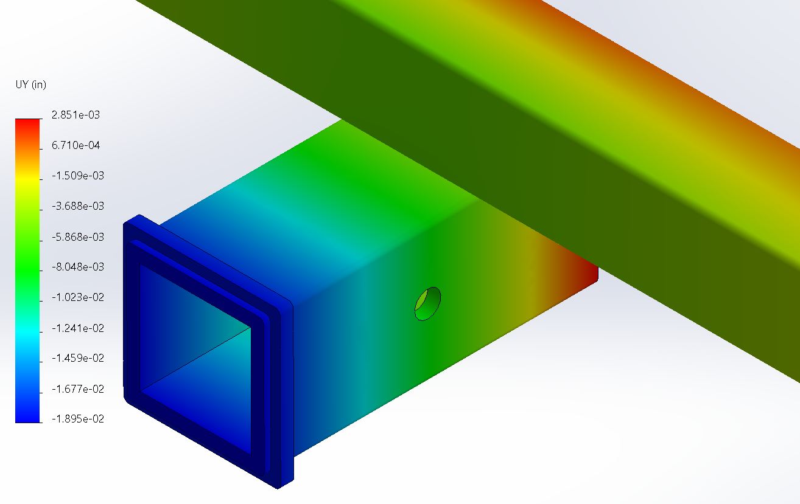
{kind=link}
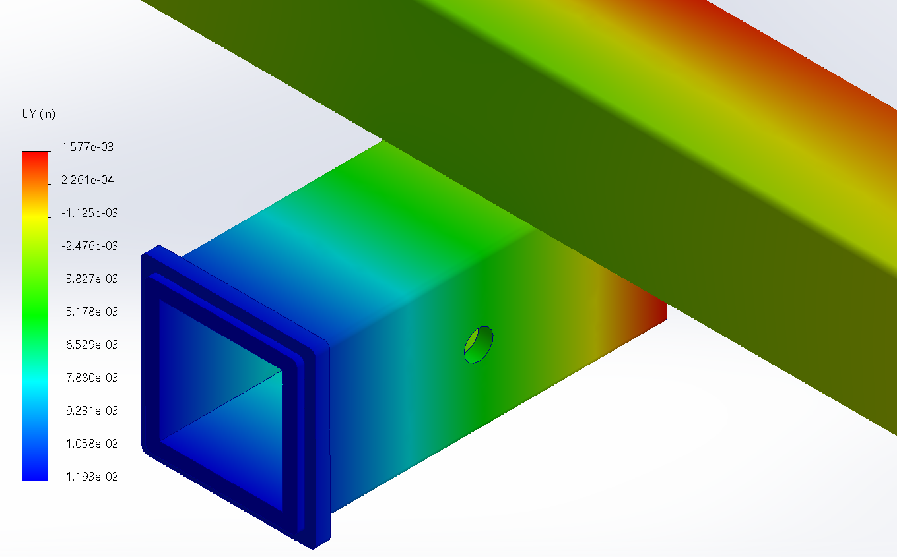
| Metric | V1 (2.0" crossbar) | V2 (2.5" crossbar + gusset) |
|---|---|---|
| FEA tip deflection | 0.0190" | 0.0119" |
| MATLAB prediction | 0.0175" | 0.0087" |
| MATLAB vs FEA variance | 8.9% | 37% |
| Deflection reduction | 31% (FEA) / 50% (MATLAB) | |
V1 MATLAB matched FEA within 8.9%, which confirmed the hand-calc model was valid for that geometry. V2 showed a larger 37% variance. The reason: upsizing to 2.5" increased the b/t ratio from 8 to 10, which pushes past where Bredt's thin-wall assumption holds. The tube walls start distorting locally under torsion, and FEA captures that; Bredt's formula doesn't. That variance is the boundary where hand calcs stop being sufficient and FEA becomes necessary.
{kind=link}
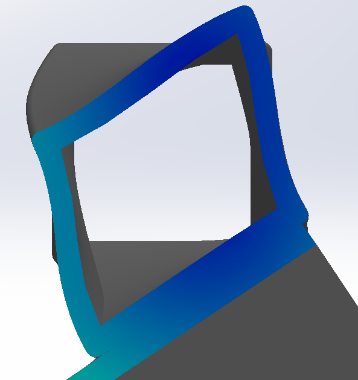
Full Assembly, 4G Loading
For the final safety check, I applied the 4G dynamic load to the full assembly with side plates, ribs, and gusset included. This is the worst-case bump scenario.
{kind=link}
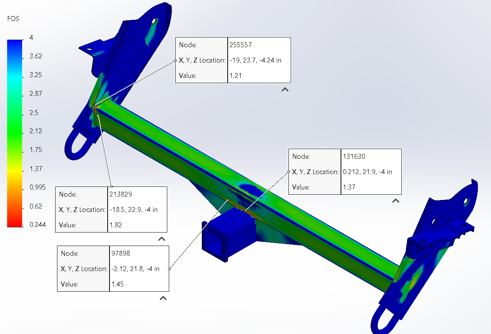
{kind=link}
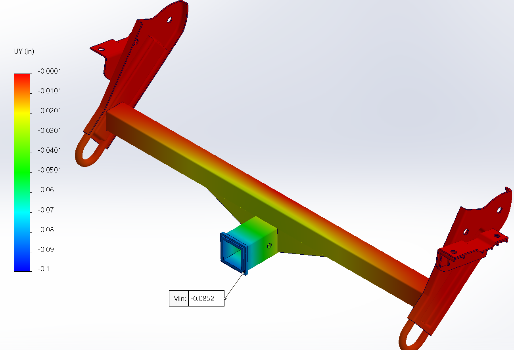
{kind=link}
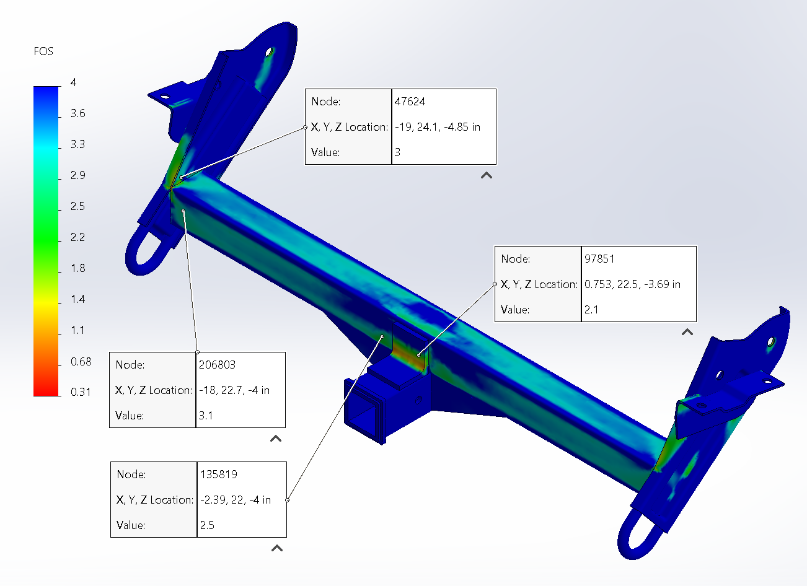
{kind=link}
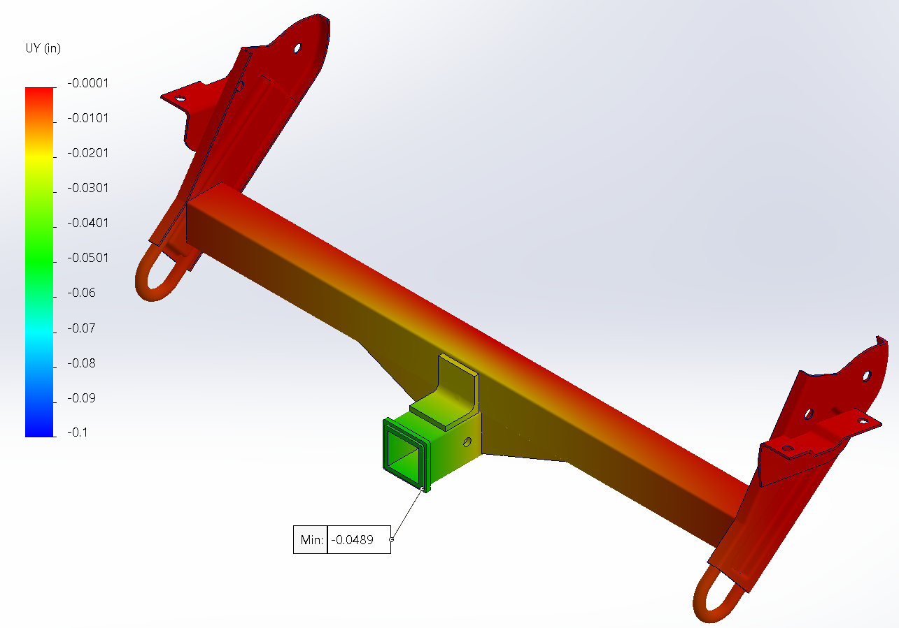
Average FoS at critical nodes was 2.7 under 4G. There's a stress concentration at the corner of the angle iron gusset, but under a 4G catastrophic load (not cyclic), local yielding in ductile steel actually relieves that concentration. It would become a problem under fatigue loading, which is where a V3 triangle gusset would be the better option.
Some simulation artifacts showed up where the crossbar meets the side plates due to gaps from the non-flat repurposed plates. In practice, weld fills those gaps.